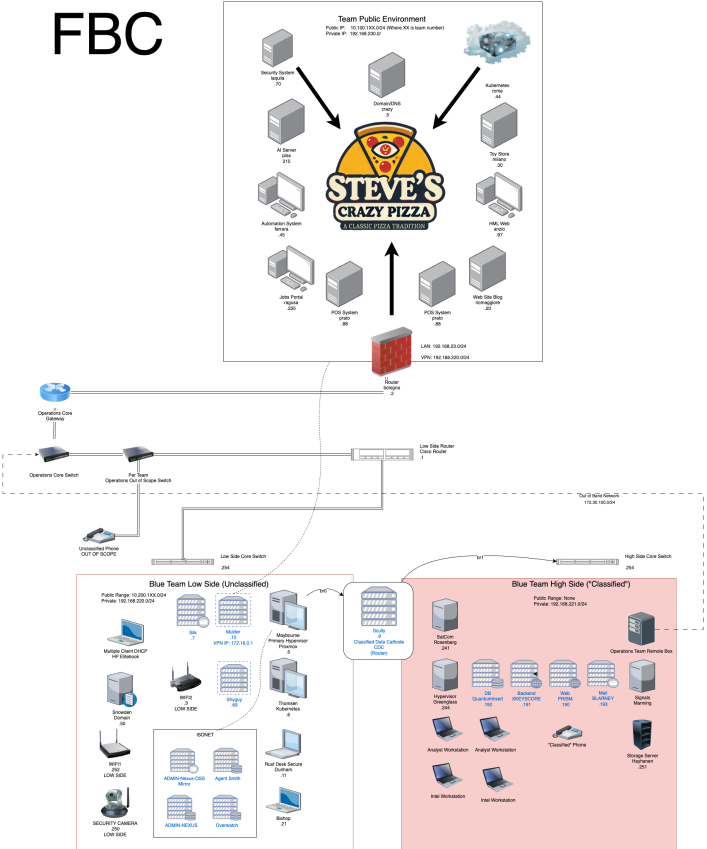
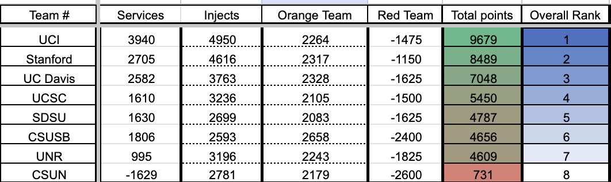
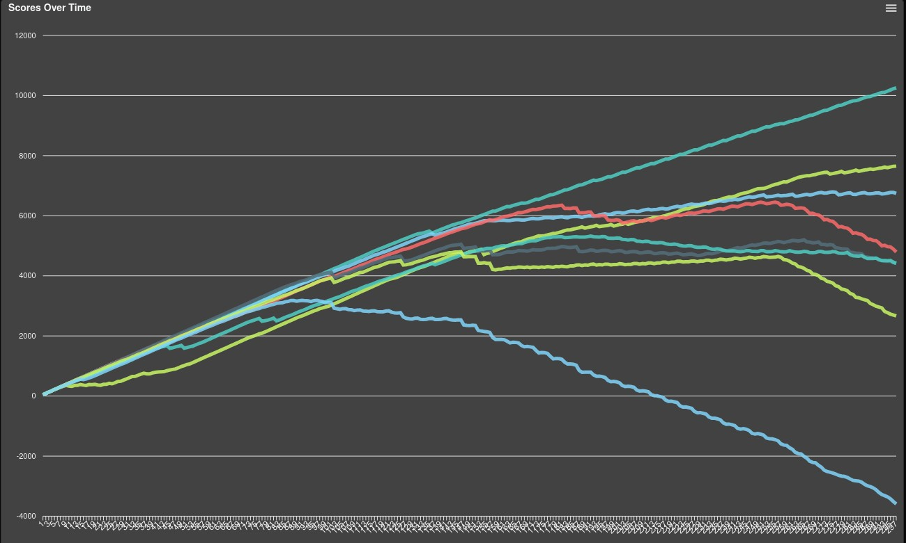

WRCCDC Regionals Writeup
This is a writeup for the WRCCDC regionals. As some context, WRCCDC is a cybersecurity competition that involves managing an environment that is a simulation of a real company, while being hit by a cyberattack from competition organizers referred to as “red teamers”.
It’s stressful. It’s chaotic. But it’s great fun.
Vocab glossary (but I won’t cover non-competition specific stuff):
- Scoring engine: Software that automatically connects, and authenticates to scored services, and “scores” them for being up
- Scored service: A service that is being checked by the scoring engine — not all services are.
- Injects: Writeups of tasks we are assigned to do
- Teams: Subsets of the competition organizers, volunteers responsible for making the game work
- Red Team: Competition Organizers who pretend to be cyberattackers by slowly infiltrating machines they could instantly destroy but instead choose not to
- Orange Team: Pretends to be customers
- White Team: Grades Injects
- Black (Ops/Operations) Team: Sets up the environment
- Gold Team: Organizional duties
- Team packet: Document noting down the topology, some scored services, and rules of the competition.
- Incident responses: Documents noting down how a cyberattack happened, affected services and data, and mitigation steps.
Writeup
Topology
I began with two nmap scans of the entire environment, to see what was on the network.
- Nmap scan 1 (public environment, physical machines)
- Nmap scan 2 (“cloud” environment/VM’s)
There was also one more environment, which was the partially airgapped one, which I did not nmap.
The topolgy was very complex, there were 3 environments in total, one “cloud” environment hosted on vcenter, and two physical environments, one of which was airgapped.

Work
There weren’t enough physical machines at first. We started out with 3 workstations that had input working and internet access, and then later pushed it up to 5. What we should have probably done is deploy a proxy of some sort on the device in between the airgapped network and the main network (scully), and then used that to get internet access on more of the workstations. But because we didn’t know if it was acceptable, we didn’t do it.
I firstly logged into the laptop with the hostname “Bishop41”. The machine ran something Winux, which is essentially Ubuntu with KDE, heavily themed to look like Windows. There was also LinuxFX, which was something similar. I liked them at first, I thought they were cool Windows clones that I could give to my mother so I could help her escape Windows, without her noticing, but the KDE UI kept crashing.
Thankfully, I have experience from my personal laptop:
systemctl --user restart plasma-plasmashell (without sudo). The jokes is that KDE “Krashes” a lot.
Firstly, I had to change the dns at /etc/resolv.conf. It was originally marked immutable, so I had to unmark it with chattr -i /etc/resolv.conf in order to be able to edit, even as a root user.
Bishop41 had some malware on it that was fairly easy to find… but I didn’t find the later bits until after I had to do the presentation. The presentation: presentation html link
Of course, I elaborated on the points in the presentation, since the slides are somewhat information sparse. For example, I broke down how the reverse shell worked, pointing to the bits of the python code that bound to a port, or ran the bash process.
And, I was also wrong about the reverse shell not being running. It was :(. I later found that there was a cronjob, either added by red teamers or black teamers
There was also another piece of dangerous software I missed, a web service that had an interface to submit python code that would run on the machine. Not quite malware, but it wasn’t a scored service. I removed it, as it was serving on port 80, which interfered when I attempted to up the apache2 service.
I did find something interesting in the apache2.
<Directory />
Options FollowSymLinks
AllowOverride None
Require all denied
</Directory>
<Directory /usr/share>
AllowOverride None
Require all granted
</Directory>
<Directory /var/www/>
Options Indexes FollowSymLinks
AllowOverride None
Require all granted
</Directory>
#<Directory /srv/>
# Options Indexes FollowSymLinks
# AllowOverride None
# Require all granted
#</Directory>I’m pretty sure /usr/share isn’t supposed to be publicly accessible on the web. Thankfully, this seems to be read only access.
I also did a later presentation on a software, Arkime. I did not manage to get it deployed, and my presentation overview was very short. However, after my presentation, they asked me many questions about PCAP’s, encryption, and other network analysis things, and I answered them pretty well. At the mixer that night, the person who quizzed me complimented me and told me that they were searching for specific keywords for the presentation.
Bishop41 also had a live, scored service that was a “python web environment”. An orange teamer actually came and in to (attempt to) use it to learn how to reverse an array. But that software was essentially a permanent security hole, as it could run arbitrary python on the machine as root.
We had trouble with docker on the Scully machine, it would time out when attempting to pull images. I never figured it out. It could ping, but it could not curl or install packages. Until it could for a bit. Then it stopped working again. And yes, DNS on the machine was working.
Later on, it got owned and some red teams claimed the bootloader was replaced with Nyan cat — although I did not see this one in person.
For the router, bologna (how is that pronounced?), it got owned later on. It was an alpine router.
~ # ss -tulpn │
│Netid State Recv-Q Send-Q Local Address:Port Peer Address:Port Process │
│udp UNCONN 0 0 0.0.0.0:67 0.0.0.0:* users:(("dnsmasq",pid=3088,fd=4)) │
│udp UNCONN 0 0 0.0.0.0:37179 0.0.0.0:* users:(("squid",pid=3482,fd=9)) │
│udp UNCONN 0 0 0.0.0.0:2521 0.0.0.0:* │
│udp UNCONN 0 0 0.0.0.0:58414 0.0.0.0:* users:(("dnsmasq",pid=3088,fd=14)) │
│udp UNCONN 0 0 0.0.0.0:53 0.0.0.0:* users:(("dnsmasq",pid=3088,fd=6)) │
│udp UNCONN 0 0 *:50916 *:* users:(("squid",pid=3482,fd=8)) │
│udp UNCONN 0 0 [::]:2521 [::]:* │
│udp UNCONN 0 0 [::]:53 [::]:* users:(("dnsmasq",pid=3088,fd=8)) │
│tcp LISTEN 0 128 0.0.0.0:8080 0.0.0.0:* users:(("shellinaboxd",pid=3441,fd=4)) │
│tcp LISTEN 0 200 127.0.0.1:5432 0.0.0.0:* users:(("postgres",pid=3409,fd=7)) │
│tcp LISTEN 0 32 0.0.0.0:53 0.0.0.0:* users:(("dnsmasq",pid=3088,fd=7)) │
│tcp LISTEN 0 128 0.0.0.0:22 0.0.0.0:* users:(("sshd",pid=3519,fd=7)) │
│tcp LISTEN 0 1024 *:443 *:* users:(("mini_httpd",pid=3257,fd=4)) │
│tcp LISTEN 0 200 [::1]:5432 [::]:* users:(("postgres",pid=3409,fd=6)) │
│tcp LISTEN 0 256 *:3128 *:* users:(("squid",pid=3482,fd=12)) │
│tcp LISTEN 0 256 *:3129 *:* users:(("squid",pid=3482,fd=13)) │
│tcp LISTEN 0 32 [::]:53 [::]:* users:(("dnsmasq",pid=3088,fd=9)) │
│tcp LISTEN 0 128 [::]:22 [::]:* users:(("sshd",pid=3519,fd=8)) │
│~ # service shellinaboxd stop │
│ * Stopping shellinaboxd ... Shellinabox is a small web service that lets you run shell commands via browser interface. Essentially a backdoor.
In addition to this, when bologna was pwned, the .profile file, which the ash shell seems to run when it started up, was set to play a very long “video” via a program called asciicinema, which basically plays videos in the terminal.
bologna:~# cat .profile
#!/bin/sh
asciinema play /.demo.recAnd then this would play a very long simulation of the machine getting hacked. To exit, I would hit Ctrl+C and then type exit, and then spam Ctrl + Z or Ctrl + D to quit. Painful, but I found zellij wouldn’t rerun this when starting. It was also persistent, it stayed even after I deleted the .profile file. (Oh. I probably should have just edited it to remove the “asciinema play” bit).
Later through the competition, we started using cryptpad on a public instance. We used a link shortener to make it easier to access. We had a spreadsheet for inventory and passwords.
Injects
We also had a lot of trouble with the Kubernetes cluster. Before Orange team came in and took it, a Disaster Recovery Plan. This documented how to migrate the services from one kubernetes cluster to another, but we did not do this.
There were some other injects that would have been helpful to us. For example, one inject was to set up a way to transfer data from high side to low side by setting up Apache Nifi. That would have been legitimately useful to transfer stuff from low side to high side.
There was also an ansible inject, which required the creation of 3 playbooks that would collect: Disk space, network interfaces, and system services running. We then had to run those playbooks on 10 machines.
Final Scores and Future Plans

We only had a single person who had been to regionals before, and our previous Windows and Linux team leads were no longer on the team. We lost a ton of knowledge, both the raw technical knowledge, but also the passed down knowledge about the competition, like what is acceptable, and what compromises are okay in terms of scoring.
I always expected last place. We were woefully underprepared, not having expected to make it to regionals — So we had all split up and began working on our own stuff (I was working on Openstack so I could have a remote lab for people next year), and we were suprised when the announcment about Regionals came out. And then we had to get back together and prepare for one of the harder regions of CCDC in less than 2 months, while our entire team consisted of 9 active members.
Like when I play chess against a vastly better player, my goal was never to win, but instead to not lose instantly. And we did.

I’m very pleased with our performance. Despite setting the low goal of not losing instantly, sometimes not even that is achievable, which sucks. But we managed to mostly hold ourselves together for the first half of the first day, and we managed to learn a lot.
Since we are effectively starting from scratch, it’s important that we record all the stuff we are missing so we can fix these issues. This is why I have this writeup. I will probaly turn the “Things to do” into a Kanban of some kind and we will knock them out one by one over the off season.
Debrief Notes
Brandon/@ProBro
- Much of the stuff was set up in the week before competition.
Ops team debrief by Wasabi:
- One of the largest topologies ever, 3 networks connected by vpn or something else.
- Scully router was too secure, stopping traffic to the phones.
- Most custom services ever. Some of it was written hours before competition start. Satellite control system, written in 4 hours. A few chatbots. OTP service could get hijacked by red team by changing the seed.
- Red hat was doing wireless hacking and jamming antennae…
- CVE’s were dropped for non ccdc-specific services.
- We are not allowed to unplug EVERYTHING. Like the coastline college environment, or the magic box. One team shut that down and their scoring stopped working
- Red team would deny outbound dns traffic to break dns. Red team would also drop udp traffic but not tcp, so ssh would still be allowed.
- some teams used the site to site vpn to connect to all networks.
- Teams should really do an inventory, especially how things are connected, not just what.
- Only 90 tickets, half of qualifiers. Teams got a lot of poinrs back from ticketing from ops team errors.
- 8 custom apps, some had CVE’s reported in them.
- Deployment for each pod went from 2 hours for a team to 30 minutes when they were setting up environments.
- Changes from Qualifiers:
- teams coordinated, red team and ops team talked to eachother. Ops team had a sheet with red team plans. They used this to guess if an issue was red team related.
- Environment was much more tested.
- NUCC (nonprofit that provides software) provided unifi gear, and they will peovide it if we ask.
- I met the owner, he goes to SFVGlug sometimes. He offered to lend us network hardware.
- Vcenter crashed.
- Slow =/= not working. Many teams complained, saying something that was not working when really it was just slow.
- Windows licenses sometimes needed to be reactivated
slmgr /rearm - Printers would instantly distract a few people from every team. I hope the vid is put on youtube, it’s hilarious.
- A couple hours before the taking of the kubernetes machine there was a disaster recovery sent out. Only 4 teams recovered from that. Also red team was taking advantage of that distraction to break into people’s machines.
- Old switch was a dhcp server, but unifi needs dhcp to get set up
- Inter Laptop
- A lot of malware
- Web based python development environment
- was supposed to be hiding the domain controller by resting on top of the machine (in our env we received a broken monitor, although we were not supposed to receive a monitor at all)
- had a unifi switch controller preinstalled, for setting up the new unifi
- 20-30 in person volunteers, 5 remote for ops team.
- 300 physical systems and 200 virtual machines.
- Ask clovismint for info about services.
- Beesad validates tickets after the event, to give points back. Thanks Beesad!
Orange Team Debrief:
- Orange team was also black team…
- Orange team scoring: 40% was phone answers, 30% was services, 30% was customer service
- Commonly missed: not answering the phone, hanging up, or not calling us back
- People blocked orange team’s vpn clients into high side
- They will call and tell if a service is down, and they track callbacks on a sheet. You get full points if you fix the service and call back.
- Radio check. Only one team changed the frequency. Interrogation.
White Team Debrief:
- Does all injects and grading
- They had a schedule for the injects, to ensure that there was always at least 2 injects except at the beginning or end of the day. They also worked with black and orange team, arranging these. Announcements are also timed, such as the DR plan.
- 3500 items scored, by this morning. 45 seconds per item scored.
- Some issues with some injects, like submitting an inject as an ODT renamed as a pdf, or same thing woth the wrong #.
- Double check them
- Read the team packet…
- A single link is not a substitute for documentation, especially for high side which doesn’t have internet.
- The inject gave temporary permission for an inject to have data flow beyweem hi side and low side. This was probably the proxy inject, where we would have set up the proxy that gives internet access to hi side.
- Easter eggs are funny and wake the inject graders up. They have very little sleep.
- Infographics should be easy to read and print.
- More chain/linked injects than usual. Common in the real world.
Red Team:
- Red team always wins. They don’t want people to make the mistakes that they did when we go into the real world.
- Every time red time does something, they are trying to teach something.
- Red team brought a radio jammer
- Only one team passed the code signals test, by sending out people to talk to the red teamers and ask what they are doing, and then change their frequency
- Red team looks at Github and sees all the repos.
- Red team doesn’t like when people do stuff that doesn’t translate to the real world, so they punish it.
- Red team “gives more love” to teams that are aware they are on the systems.
- Red team lost access to their boxes when vcenter when down becuase they forgot their changed ip address.
- Red team keeps surprises so people can’t prep for what they do.
- Red team did not do anything tricky, like 0 days the night before (nationals)… they simply searched for what’s vulnerable and what’s open.
- “We love kubernetes”. K8s is new to the competition. To mitigate basics: change default kubeconfig or block 6443 api server. This is how they got in, and they would run pods, down pods, etc.
- Forgejo has default creds in helm chart, changes could be pushed to fluxcd.
- Look into environment variables and configurations of deployments. Helm values, etc.
- Xtraop product manager says to Learn Kubernetes because people struggle to secure it in the real world.
- MITRE shows how people do attacks in the real world.
- Windows: Zerologon, eternalblue, RPC, new C2 called Realm, static rust binary. 3 differenr tyows if C2: slitter, realm, cobalt strike.
- Reset DC passwords, stole hashes, pass the hash.
- Watching connections, ssh logs. Large static binaries = suspicious, potential C2 server. Binary in tempt directory making outbound connections = suspicious.
- Scully had ssh private key in root of scully. Make sure to clean those up.
- Alpine router got pwned, 3 different ways to get admin access. Webmin/cockpit I think? They should be shut down.
- Ragusa had a flask app with a command injection vuln. No team found it for the entire competirion. We need to be able to figure out how they got in and patch it.
- Red team offered to do mock/scrimmages
For Future CCDC
Issues We Struggled With
- Not enough machines in the main workstation area. We started with 3 and pushed it up to 5 on day 1, but we still struggled.
- I counted about 39 machines… Too many machines to manage, too little workstations
- Automation solutions are needed
Preparation Methodology Adjustments
- People need to learn scripting
- Python for Linux
- Powershell for Windows
- People need to be able to write/edit scripts on the spot
- People need to drill the fundamentals. Overall lack of experience that can be fixed.
- Set up stuff and tear it down.
- Kubernetes interaction/ how to change certificate used to authenticate
- docker-compose vs with space instead
- DNS/proxy access to the environments
- Be able to handle never before seen software thrown at us. Either rare stuff, or custom CCDC stuff.
- People are gonna need to specialize. I wanted to avoid this. But I can’t see a way around this. There isn’t enough time for every person to learn every software, as much as that’s what I want to do to prepare them for the real world
- OSINT in general
- But we should look at the Github’s of all other teams and competition organizers. There might be things like config files (kubernetes, or nix) in those git repos
- Github code search. Search engines. People need to know how to search.
- Certain injects, like the ansible one’s, could be done “at home” and then we could reuse the code during comp.
- Possibly drill to prepare endurance. Although music would have helped.
- Drill for readiness with specific utility software: ssh, zellij, restic (?), SIEM
- Also proxies
- But it’s not worth it to attempt to memorize the environments, especially since they give us rare or custom services. It’s better to have a fundamental understanding.
- Drill to the point where people can still operate under pressure
- Basic troubleshooting skills — Although I don’t think they were lacking, but instead people flustering under pressure.
- Blogs people write to, rather than injects.
- Weekly assignments that are discussed and done during the week.
Things to Prepare
- Printouts
- Ascii cheatsheet: Yeah. But we did actually need it for decoding the special signals being sent.
- Documentation? Create our own team book/cheatsheets?
- Julia Evans cheatsheets would have helped a lot.
- Pacman Rosetta
- Sans cheatsheets, E.g: Linux
- Other misc, UPDATED cheatsheets
- Simpler passwords for our password sheets, or possibly cryptpad spreadsheet
- Way more password sheets if we are going to do those. Like 16 instead of 6.
- Sticky notes for the computers, to have a “todo” for what to do on the workstation/related machines?
- Blank sticky note = no password changed
- Physical Books
- Unix handbook, or the LPIC books are really good for physical books documenting Linux.
- Custom Linux ISO that’s really small, possibly doesn’t need network, and has automatic install. This way we don’t need to click through the Debian installer.
- Also find a good small live distro for physical machines, so that we can use things like
chntpwor other recovery tools.
- Also find a good small live distro for physical machines, so that we can use things like
- Quarto and formatting:
- I threw together something quick using Nix to install quarto to make an html revealjs presentation and it worked really well.
- Do we need themed templates for docs? Quarto’s default dark is lame but extremely simple to use, vs custom document templates for every competition.
- Or quarto brand.yml for branding/templates
- Templates for presentations, injects.
embed-resources: trueto create self contained quarto revealjs and html. See docs
- Nmap scans in multiple output formats — including markdown tables of multiple kinds (service as table, machines as table, etc). Or as CSV’s.
- SIEM solution…
- Some way to log network connections for incident responses
- Log network and traffic for software like Bishop41’s extremely insecure web based python dev environment
- Automate group policy — No more lockouts
- Become able to consistently fix problems caused by red team on the Windows machines.
- Learn the inject naming scheme.
- Airgap ready: Part of our environment was airgapped. How do we set up services without google?
- Physical docs, paper/books
- Small, portable, transferable services
- Terminal/Tui collaboration tools. Zellij, but also, does a collaborative text editor exist?
- Some way of organizing work for easy handoff
- The machines had virtual desktops but I didn’t use them (they didn’t show up on LinuxFX/Winux)
- Automated granular backups (restic?)
- Deduplication
- Just config, or data as well
- Use CIS benchmarks instead of Microsoft Docs when docs are bad
- Ansible injects can probably be done in advance. We could do them at home as injects and then copy the code.
- Some sort of backup software. Restic?
- Set up honeypots/traps for lower privilege users (Windows, but Linux could do this as well).
- Windows containers
- Find ip’s, prevent privilege escalation
- Automation that could be run in the background so other people can work on the workstation
- Some kind of pastebin service to share text/files/images.
- Soar/Nix to install packages, or other custom/distro agnostic package managers
- Nix for quarto. But texlive small is needed for pdf.
- Soar for zellij, restic, some other static stuff.
- Easier passwords
- Backdoors for the windows machines outside of a backup user/admin
- Meshcentral? (also, can Meshcentral aggregate logs SIEM style?).
- Url shortener, self hosted
- Clipboard managers. Built into KDE and Windows nowadays.
- KDE is the best. Gnome lacks features.
Software we need:
- Static binary, client-server
- “clustered”, where instances can interact, possibly find eachother
- Shell (reverse shell?) that are collaborative (zellij)
- backup from any machine to any other (restic?)
- Also need Windows backup (group policy, AD stuff, DNS) backup ability
- Forward, view and search logs from other machines
- lnav?
- Also network traffic, basically Incident Response needs (source ip address, destination, time). Command history.
- Collaborative text editor or spreadsheet setup.
- Inventory, passwords, injects
- Built in automation
- Basic tasks
- Machines add themselves to the inventory
- Changes password as an install step
- Proxy traffic to other machines, to escape airgap
- Pastebin/file sharing
- Run on our own devices during competitions
- Literally based on kubernetes?
- Hide itself? The ability to disguise as other services?
Scripts for password shuffling, adding to SIEM, etc. They have many things we want. We should also look at other teams.
Pre/During Comp
It should be noted that some of this is stuff we did during the competition that worked well, in addition to things we didn’t do but should have.
- Stop assuming instructions are perfect.
- Every team packet has had at least one thing incorrect. A machine not existing but documented, vice versa, changed ip addresses, etc
- The proxy didn’t work because the instructions weren’t perfect. Eventually we requested help from Black Team and they did but we can experiment more with instructions on our own.
- No hate to Ops Team. But it’s a complex competition and that means things will go wrong. We just gotta adapt.
- Cryptpad: We could have and should have used a public instance for injects that needed collaboration
- And cryptpad has a kanban board for task organization
- Possibly password sheet as well
- Use link shortener to find/share it easily.
- Reuse injects if they reuse machines
- Backup admin accounts on the machines. Could probably be automated.
- Clipboard manager… please
- I misspelled the password when writing it down…
- We should have brought the other sheet, having multiple people write the passwowrd down.
- Have physical backups and redundancies as well?
- Add machines to spreadsheet inventory as part of first steps
- Along with password, and documenting what password is used via coordinates.
Notes
This is that passed down knowledge that we are lacking.
- I didn’t know dockerizing services was acceptable, but I overheard one team mention this, and it was also mentioned in the discord as the accepted strategy to secure one the flask web app that let the users run arbitrary python code as root on the machines.
- ALL the teams did better than us. But one team unplugged Coastline Collges non-ccdc networking equipment.
- One team unplugged the “magic box” the scoring engine used.
- It’s probably much better to be much more aggressive and ask for forgiveness rather than permission.
Notes
- Open internet acccess
- Proxy was not forced
- Chatgpt, perplexity were unblocked
- Red Team did not delete
/var/syslogeven though they cleaned journalctl - Arkime wants elasticsearch/opensearch — they don’t come with a UI by default
- hold shift to bypass zellij hijacking selections in mouse mode
- Apparently it’s possible to disable
sys/syscalls in python. Not perfect but is better secure than arbitrary commmands. - No second presentation on the second day, despite claims otherwise.
- Injects, including presentations, only in pdf format.
- Winget was installed on at least one of the windows machines.
- Active Directory doesn’t work in safe mode.
- Red team did not get an empty “test environment”. There was a half sized environment managed by Anthropic Claude though. It did’t do too well.
- There was actually an inject to set up a data flow between hi side and low side
- There as an inject about setting up a new unify switch before they took our old one away, and there was an announcement about migrating the services from one kubernetes clusters before they took the small NUC with the kubernetes on it as well.
Off-Topic
To Do Misc/Funny
(To do stuff that isn’t as important or relevant)
- CCDC playlist: Since we had internet access, we should have put some bops on
- In all serious, this would have helped with our motivation greatly.
- One team was watching a fortnite stream (though this was an image from a previous year). Everybody goes “haha funny fortnite” but in all seriousness, watching twitch streams acts as an external source of motivation for me while I work on longer projects. I watch either people new to horror games, or software/cybersec stuff, because I enjoy seeing people suffer.
- Get the model of Coastline’s college presentation windows machine — I love it’s form factor, it’s quite small. I forgot.
:(. Oh well. - I should write my lowercase l in such a way where it’s clear what they are
- More pencils. I should also bring my own notebook.
- Cutleries? It would be nice if we had a knife for the cream cheese so we could put it on the bagels.
- Scissors and printer paper (I want to do origami)
- Amazon makes customm hoodies. They aren’t good, apparently, but you can just submit an image to go on a hoodie.
- Keep my hands/self warm. The room was cold and I typed slower than usual until my hands warmed up.
Notes Misc
- The HP Elitedesk 800 G1 and G6 don’t seem to have the small form factor I expected
:((They were the desktops in the classified area of the competition) - Datto brand device, running Debian 12 was a “magic box” used for Black Team. But I really liked the form factor of that device, it was quite small, like a NUC.
- Apparently, Insurance companies find red teamers highly valuable, since they can assess risk in companies that they insure for cyber attacks.
- “Red team forces leadership to respond”
- Not wearing identifying clothing is apparently a strategy by some teams.
Sean/Tirefire:
- College is also about what you don’t like as well as what you like
- Weekly assignments assigned on saturday, and then done and discussed during the week
- Team leader who managed rather than operating directly, they wouldn’t have their hands on a keyboard.
- Inject person who is timekeeper and bugging people to do things
- Team composition: 2 networking 2 linux 2 windows, all problem solvers. Figure it out if you don’t know. Not necessary specialize, but at least cross train.
- Argued that we should have just taken a laptop to low side
- We could have just connected it to low side wifi.
- https://fogproject.org — disk cloning project, pretty cool
- Potential strat: Turn off service, harden some, turn it off again to prevent SLA checks.
- Qualifiers env is replicated into regionals regularly. “You’ll see regionals again, like in invitationals”.
- “We don’t affect Nationals at all”.
- Cameron wanted to record. “Just do it anyways, see what happens.”. Forgiveness, rather than permission.
- Put CCDC on your resume. It shows skills of teamwork, handling pressure, and learning new things.
- Presentation is a skill in it of itself
- Understanding security tradeoffs, compromises. Sometimes a sacrifice needs to be made.
Personal/Leadership Notes
- Encourage hypothesis/testing in a learning environment, rather than giving answers
- Watched a Black Teamer do it excellently